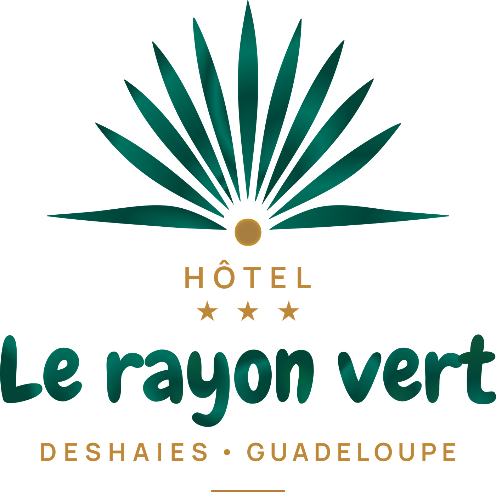

← Le site
FR
EN

Livret d'accueil
Bienvenue !
Deshaies · Guadeloupe
Appeler la réception
Vous passez un bon séjour ?
Un avis sur Google, c'est deux minutes pour vous et beaucoup pour nous.
Mèsi anpil !
Laisser un avis